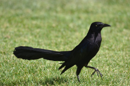

© Zoe Johnson-Ulrich
Empanada - Adult female
Leg bands: Yellow (left leg) / Purple (right leg) - Banded in Jan 2018
She was very calm and a keen observer of human behavior when she in the aviaries in early 2018. In the wild, she does her own thing and particularly likes hanging out under a big shady tree on a golf course.
© Zoe Johnson-Ulrich
Fajita - Adult female
Leg bands: Purple / Blue - Jan 2018
She was an eager participant in behavioral choice tests when she was in the aviaries in early 2018: she was really curious and exploratory and was willing do anything for peanuts. Back in the wild, she settled in with a group of grackles that are nesting in two big pine trees near a soccer stadium.

© Zoe Johnson-Ulrich
Gordita - Adult female
Leg bands: Blue / Orange - Mar 2018
She is a big fan of the traps and keeps revisiting them even after she was banded.
Quesadilla - Adult female
Leg bands: Orange / Red - Apr 2018
We don't see her around much. If you see her, will you email Corina and let her know where?
She is a traveler: after banding, we didn't see her for two months, and then she popped up 0.5 miles away from her banding location.
Flauta - Adult female
Leg bands: Red / Green - Apr 2018
Her projectile defecation led to us deciding to always use a towel over our laps when banding.
Tostada - Adult female
Leg bands: Blue / Green - May 2018
Naranja - Adult female
Leg bands: Orange / Orange - May 2018
A very vocal grackle who is a traveler: we saw her about 0.25 miles away from where we banded her.

© Zoe Johnson-Ulrich
Sincronizada - Adult female
Leg bands: Red / Yellow - May 2018
Quite the escape artist!
|
© Zoe Johnson-Ulrich
Nacho - Adult male
Leg bands: No ring / Light green - Apr 2018

© Zoe Johnson-Ulrich
Taquito - Adult male
Leg bands: No ring / Silver - Apr 2018
He hangs out around Psychology North on the ASU campus - in the trees or in the grass.
Papa - Adult female
Leg bands: Purple / Yellow - Apr 2018

© Zoe Johnson-Ulrich
Chile - Adult male
Leg bands: No ring / Black - Apr 2018

© Zoe Johnson-Ulrich
Palomita - Adult female
Leg bands: Blue / Red - Apr 2018
A calm grackle who might be nesting in Nacho's territory (a palm tree)
Al Pastor - Adult male
Leg bands: No ring / Light blue - May 2018
He likes popcorn.
Botana - Adult female
Leg bands: Red / Blue - May 2018
A grackle with a mysterious past: she has a bald patch on her head and is missing part of a toe. She hangs out with Fajita and Gordita.
Salsa - Adult female
Leg bands: Green / Purple - May 2018
A spunky grackle!
|